Präzise 2D-Grundrisse erstellen mit dem Online-Raumplaner
Der 2D Raumplaner ermöglicht maßstabsgetreue Raumplanung direkt im Webbrowser. Erstellen Sie Grundrisse Ihrer Wohnung, platzieren Sie Möbel per Drag and Drop und exportieren Sie als PDF, SVG oder PNG.
Keine Installation
100 % kostenlos
Export ohne Wasserzeichen
Alle Betriebssysteme
Warum der 2D Raumplaner Ihre Innenarchitektur verändert
Nutzen Sie den Online-Raumplaner für Ihre Traumwohnung — von der Raumplanung bis zur fertigen Visualisierung.
Kostenlos experimentieren
Probieren Sie verschiedene Grundriss-Layouts aus, ohne einen Cent auszugeben. Der Raumplaner ist komplett kostenlos — inkl. aller Exportformate und Möbelmodelle.
Zeit sparen bei der Raumplanung
Vergleichen Sie verschiedene Möbelanordnungen digital, bevor Sie Möbel kaufen oder Wände versetzen. Das spart Zeit und verhindert kostspielige Fehler.
Realistische Visualisierung
Erstellen Sie einen 2D-Grundriss und visualisieren Sie diesen anschließend als realistisches 3D-Modell. So sehen Sie Ihre Einrichtungsideen, bevor sie Wirklichkeit werden.
Ergonomie berücksichtigen
Die Raumplanung berücksichtigt Ergonomie im Wohnraum — Möbel passen optimal auf jede Fläche und Laufwege bleiben frei. Ideal für die durchdachte Innenarchitektur.
3D-Raumplaner kostenlos herunterladen
Erstellen Sie Ihre Räume im 3D-Modellierungsprogramm und visualisieren Sie Ihre Innenarchitektur. Anders als komplexe CAD-Software ist der Raumplaner speziell für Einsteiger konzipiert — keine Vorkenntnisse nötig.
Realistischer 3D-Plan
Über 750 Möbelmodelle
Kostenschätzung inklusive
Fertige Demo-Projekte
Ob Wohnzimmer, Schlafzimmer, Küche oder Kinderzimmer — planen Sie jeden Raum Ihrer Wohnung mit der intuitiven Software.
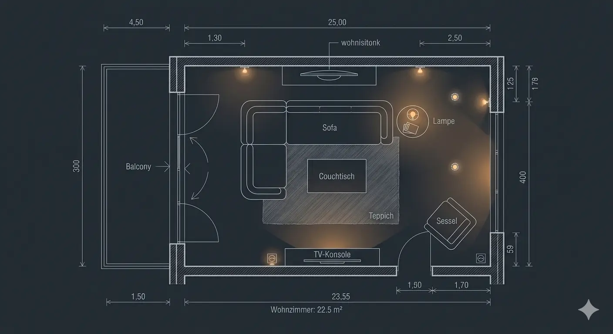
Wohnzimmer
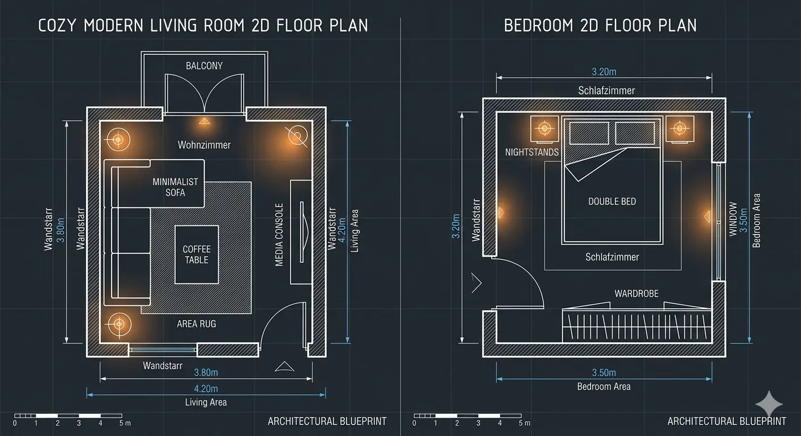
Schlafzimmer
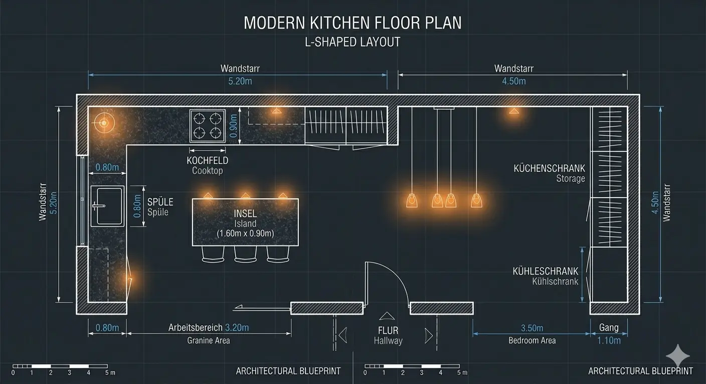
Küche
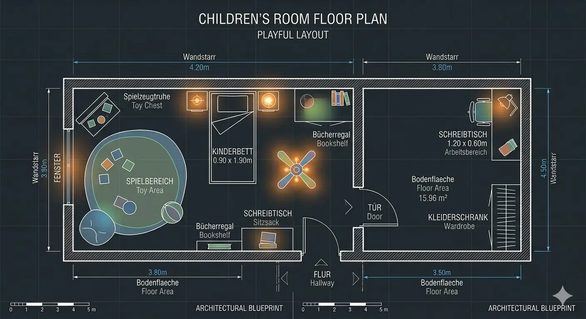
Kinderzimmer
So erstellen Sie einen 2D-Grundriss — Schritt für Schritt
In fünf einfachen Schritten vom leeren Bildschirm zum fertigen Grundriss Ihrer Wohnung.
1
Wände zeichnen
Erstellen Sie den Grundriss Ihres Raumes im Modus „Raum zeichnen". Klicken Sie mit der Computermaus an die Stellen, wo die Ecken der Wände sein sollen. Bei rechteckigen Räumen geben Sie einfach Länge und Breite in Quadratmetern an — der maßstabsgetreue Grundriss wird automatisch erstellt. Auch L-förmige oder individuelle Raumschnitte sind problemlos möglich.
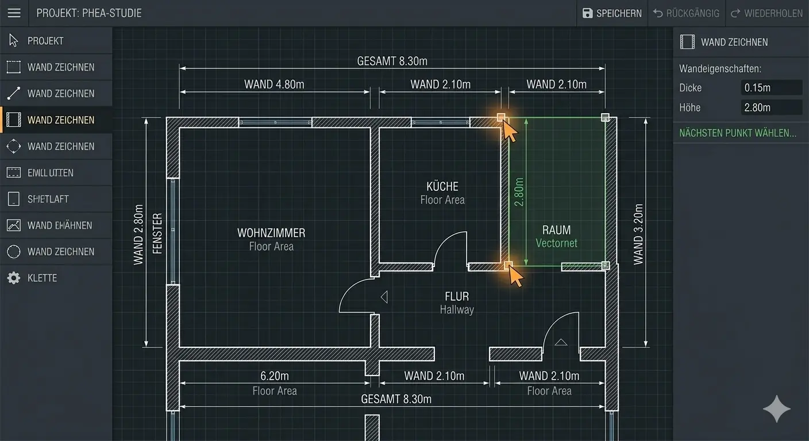
2
Fenster und Türen hinzufügen
Ziehen Sie Fenster und Türen per Drag and Drop an die gewünschte Wand. Die Rasteranzeige hilft bei der exakten Positionierung. Kleine Korrekturen sind jederzeit möglich — verschieben Sie Objekte einfach mit der Maus. Der Raumplaner unterstützt die gängigen Fenster- und Türtypen für eine realistische Raumplanung.
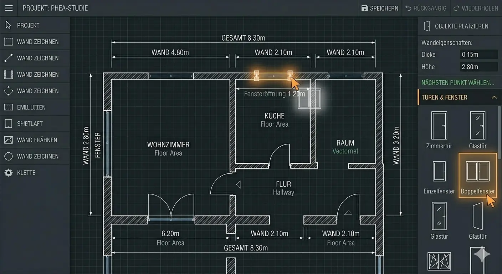
3
Möbel platzieren
Wählen Sie Möbel aus der umfangreichen Bibliothek und ziehen Sie sie direkt in den Grundriss. Von Sofas über Betten bis zu Schränken — über 300 Möbelvarianten stehen zur Verfügung. Passen Sie Größe, Drehung und Position an. So können Sie verschiedene Einrichtungsideen vergleichen und die optimale Anordnung für Ergonomie und Ästhetik finden.
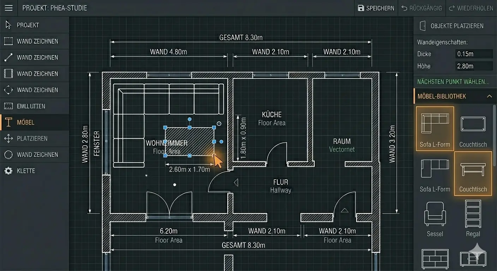
4
Dekoration und Materialien ergänzen
Fügen Sie Texturen, Bodenbeläge und Wandfarben hinzu, um den Raum realistisch darzustellen. Platzieren Sie Zimmerpflanzen zur Zonierung oder Dekorationselemente auf dem Esstisch. Durch die individuellen Materialien entsteht eine lebensnahe Visualisierung Ihrer Einrichtung.
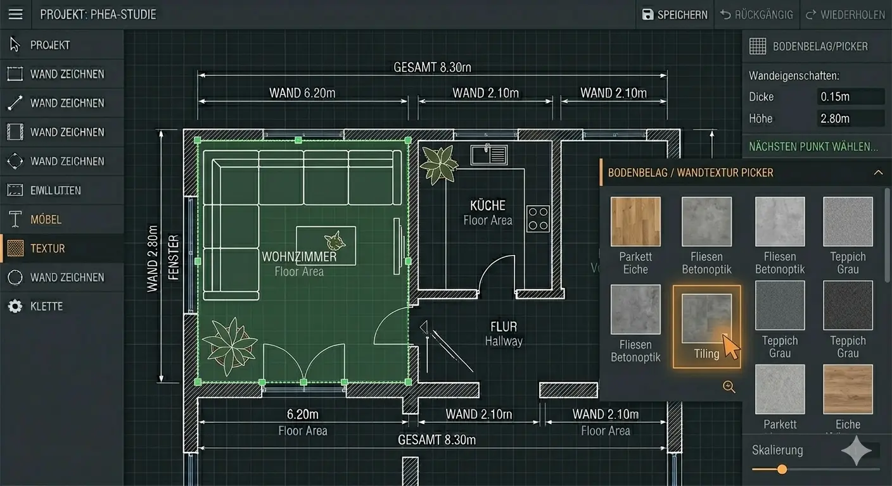
5
Grundriss speichern und exportieren
Laden Sie Ihren fertigen 2D-Grundriss als PNG, SVG (Scalable Vector Graphics) oder PDF (Portable Document Format) herunter. Der Export ist komplett kostenlos — ohne Wasserzeichen, mit exakten Maßen und in hoher Auflösung. Teilen Sie den Grundriss mit Ihrem Innenarchitekten, Handwerkern oder Ihrer Familie.
Der 2D Raumplaner läuft direkt im Webbrowser — einfacher als jede CAD-Software.
Keine speziellen Hardware-Anforderungen
Kompatibel mit allen Betriebssystemen
Nur ein moderner Webbrowser nötig
Einfache Benutzeroberfläche für jeden Grundriss
Vom Wohnzimmer bis zur Küche — alle Räume im Detail planen
Jeder Raum hat eigene Anforderungen an Ergonomie, Ästhetik und Funktionalität. Der Raumplaner unterstützt Sie bei der individuellen Raumplanung.
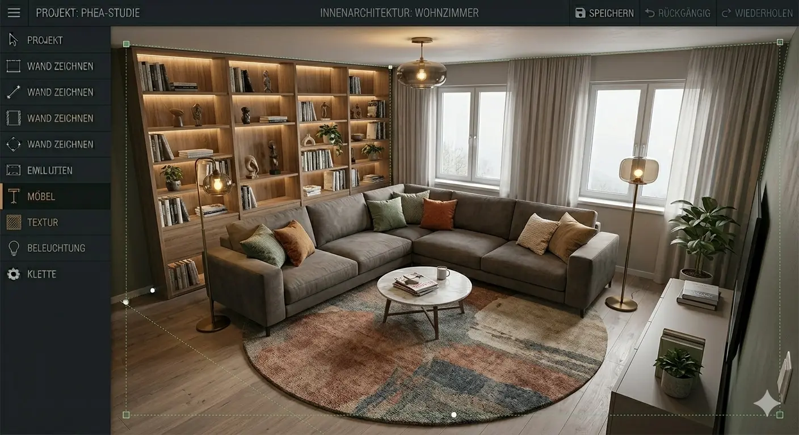
Wohnzimmer gestalten
Das Wohnzimmer ist der zentrale Treffpunkt Ihrer Wohnung. Planen Sie offene Sitzbereiche, Regale und Dekoration. Experimentieren Sie mit der Zonierung durch Teppiche und Zimmerpflanzen, um eine gemütliche Atmosphäre zu schaffen. Der Raumplaner zeigt Ihnen sofort, ob die Möbel ergonomisch angeordnet sind.
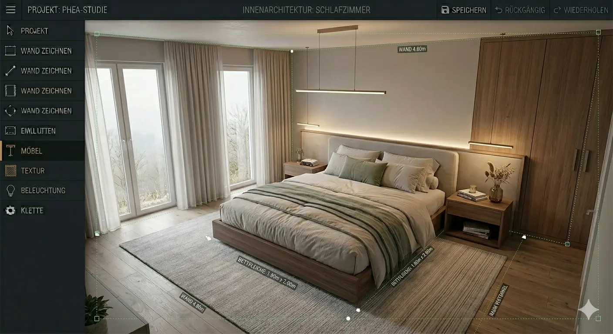
Schlafzimmer planen
Im Schlafzimmer steht Erholung im Vordergrund. Bestimmen Sie die Position für Bett, Stauraum und Nachttische. Der Raumplaner hilft bei der ergonomischen und funktionalen Raumaufteilung — damit genügend Platz für Laufwege und eine angenehme Beleuchtung bleibt.
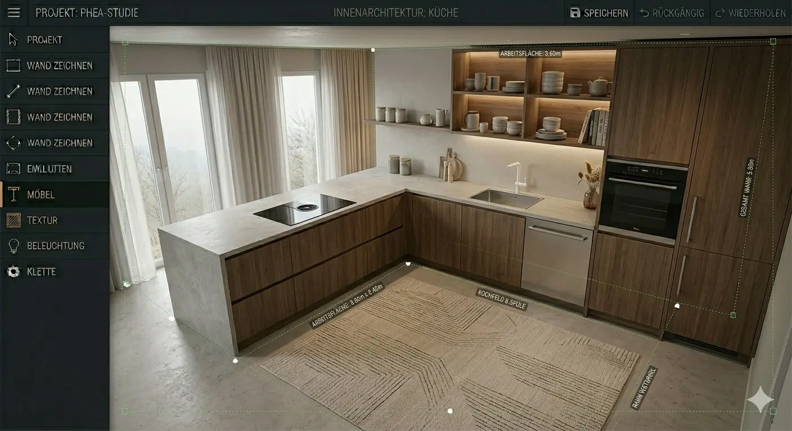
Küche entwerfen
Die Küche kombiniert Funktion und Ästhetik. Platzieren Sie Arbeitsflächen, Spüle und Kochfeld ergonomisch und planen Sie ausreichend Stauraum. Mit dem Raumplaner können Sie die Anordnung der Küchenelemente optimieren, bevor Sie einen Kostenvoranschlag einholen.
Professionelle Werkzeuge für Ihre Raumgestaltung
Neben dem 2D-Grundriss bietet der Raumplaner umfangreiche Funktionen, die an professionelle CAD-Software erinnern — aber viel einfacher zu bedienen sind.
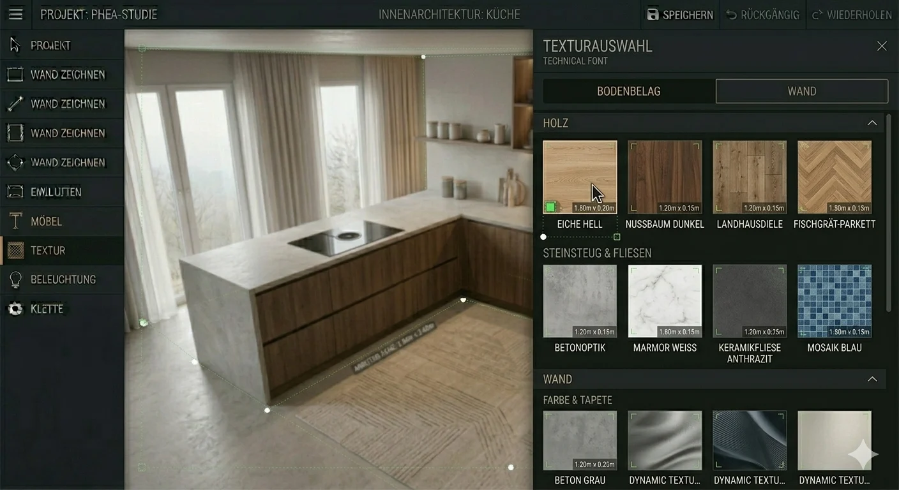
Oberflächen & Materialien
Über 1.000 Texturen für Wand-, Boden- und Deckenbeläge. Auch eigene Materialien von Baustoff-Webseiten können integriert werden — für eine realistische Raumwirkung.
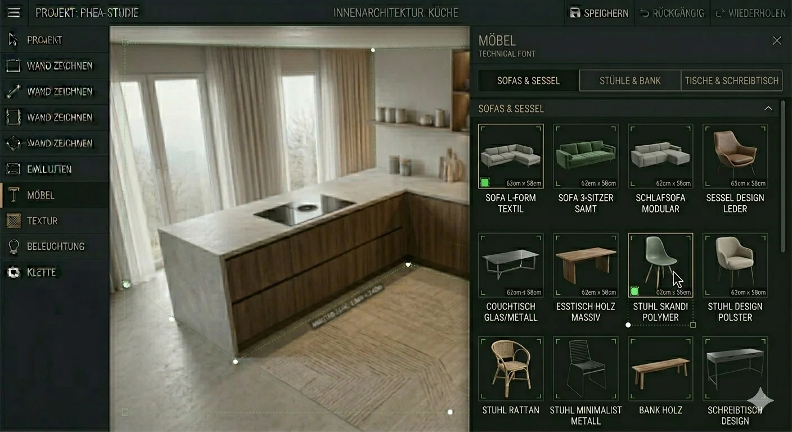
Vielfältige Möbelmodelle
Über 300 Möbelvarianten in der Software — von modernem bis klassischem Design. Ändern Sie Maße, Farben und Stile nach Bedarf per Drag and Drop.
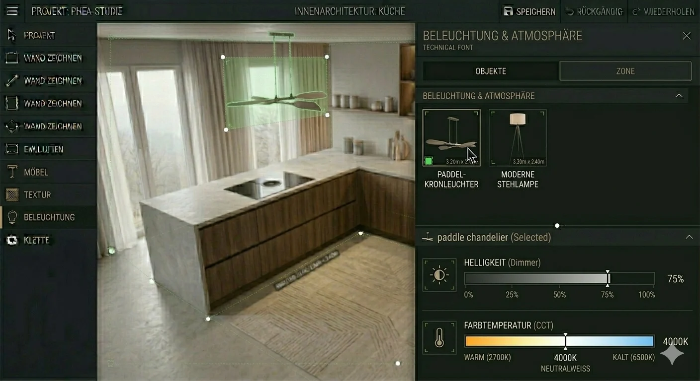
Beleuchtungsplanung
Kombinieren Sie Kronleuchter, Wandleuchten und Stehlampen. Passen Sie Helligkeit und Farbtemperatur an, um die optimale Lichtstimmung für jeden Raum zu finden.
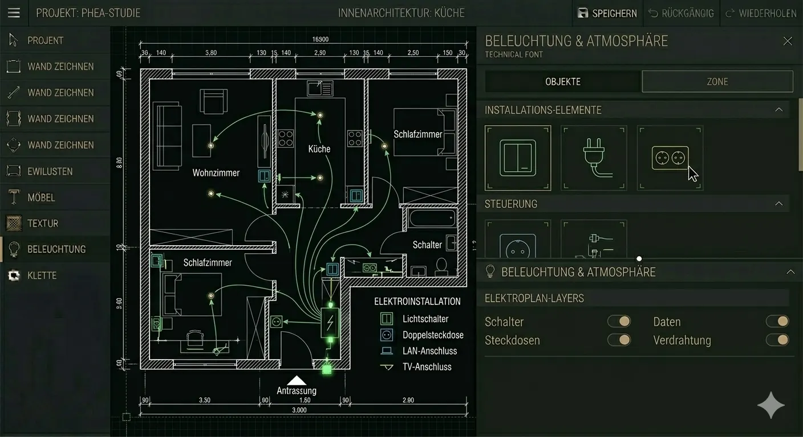
Elektroinstallation
Platzieren Sie Schalter und Steckdosen gemäß dem Elektroplan. Stellen Sie die Höhe ein und passen Sie das Design an — wichtig für jede Renovierung.
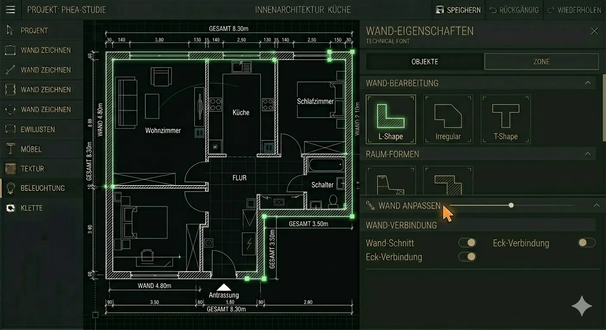
Individuelle Raumformen
Ob rechteckig, L-förmig oder vollkommen individuell — laden Sie den Grundriss Ihrer Wohnung hoch oder zeichnen Sie Wände direkt im Online-Tool. Alle Raumschnitte lassen sich präzise anlegen.
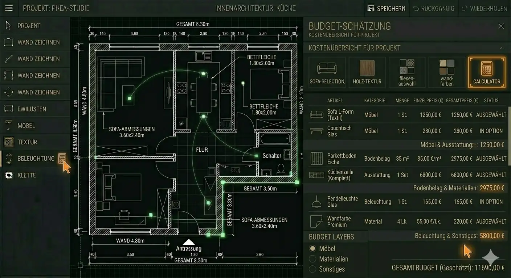
Kostenvoranschlag
Planen Sie Ihr Budget inkl. Handwerkerkosten und Demontagearbeiten. Erstellen Sie separate Einkaufslisten für jeden Raum — so behalten Sie den Überblick über Ihre Immobilie.
Wann braucht man einen 2D Raumplaner?
Bei komplexen Strukturen lohnt sich ein professioneller Architekt. Doch für typische Alltagssituationen ist der Online-Raumplaner die clevere Alternative. Er ermöglicht den Vergleich verschiedener Grundriss-Layouts, bevor Sie Möbel kaufen oder Wände versetzen. Teilen Sie Ihre Entwürfe mit Familie, Handwerkern oder Ihrem Innenarchitekten — alle sehen das gleiche Bild.
Umzug in eine neue Wohnung
Renovierung einzelner Zimmer
Möbelkauf vorbereiten
Immobilien-Exposé erstellen
Ideen mit Handwerkern teilen
Heimwerker-Projekte planen
Ob Wohnung, Haus oder einzelne Zimmer — der Raumplaner ermöglicht die einfache Kommunikation von Design-Ideen. Sparen Sie Kosten und gewinnen Sie Planungssicherheit für jedes Einrichtungsprojekt. Für Immobilienmakler und Hausverkäufer: Erstellen Sie professionelle Grundrisse für Ihr Immobilien-Exposé — inklusive Maßangaben und möblierter Ansicht.
Ein 2D-Raumplaner ist eine Software zur Raumplanung, mit der Sie maßstabsgetreue Grundrisse Ihrer Wohnung oder Ihres Hauses erstellen. Anders als komplexe CAD-Programme ist der Online-Raumplaner speziell für Einsteiger konzipiert — keine Vorkenntnisse in Innenarchitektur nötig. Sie zeichnen Wände, platzieren Möbel und erhalten eine Vogelperspektive auf Ihr Raumlayout.
Ist der 2D Raumplaner wirklich kostenlos?
Ja, der Online-Raumplaner ist komplett kostenlos. Sie können beliebig viele Grundrisse erstellen, Möbel aus der Bibliothek platzieren und Projekte als PDF, SVG oder PNG exportieren — ohne Wasserzeichen und ohne versteckte Kosten. Auch die 3D-Visualisierung in der Desktop-Software ist kostenlos.
Kann ich den Raumplaner für meine Wohnung verwenden?
Absolut. Der Raumplaner eignet sich für alle Raumtypen — vom kleinen Apartment bis zum gesamten Haus. Erstellen Sie Grundrisse für Wohnzimmer, Schlafzimmer, Küche, Kinderzimmer und mehr. Auch für Immobilien-Exposés ist das Tool ideal: Professionelle Grundrisse mit Maßangaben lassen sich schnell erstellen und teilen.
Welche Alternativen gibt es zum Online-Raumplaner?
Bekannte Alternativen sind Sweet Home 3D (kostenlose Open-Source-Software), RoomSketcher (teilweise kostenpflichtig) und der IKEA Raumplaner (nur für IKEA-Möbel). Der Online-Raumplaner bietet den Vorteil, direkt im Webbrowser zu funktionieren, alle Exportformate kostenlos bereitzustellen und eine große Möbelbibliothek ohne Markenbindung zu bieten.
Brauche ich spezielle Software oder Hardware?
Nein. Der 2D-Raumplaner läuft direkt im Webbrowser — kompatibel mit allen gängigen Betriebssystemen. Sie brauchen lediglich einen modernen Browser und eine Internetverbindung. Für die erweiterte 3D-Visualisierung gibt es eine kostenlose Desktop-Software für Windows.
In welchen Formaten kann ich meinen Grundriss speichern?
Sie können Ihren Grundriss als PNG (Bilddatei), SVG (Scalable Vector Graphics — ideal für professionelle Weiterverarbeitung) oder PDF (Portable Document Format — zum Drucken oder Teilen) exportieren. Alle Formate enthalten exakte Maßangaben in Quadratmetern und werden in hoher Auflösung erstellt.
Eignet sich der Raumplaner auch für Immobilien-Exposés?
Ja. Immobilienmakler und Hausverkäufer können professionelle Grundrisse inklusive Maßangaben und möblierter Ansicht erstellen. Der kostenlose PDF-Export eignet sich hervorragend für Immobilien-Exposés. So entstehen ansprechende Visualisierungen der Immobilie ohne externe Dienstleister.
Starten Sie jetzt Ihren 2D-Grundriss
Entdecken Sie die Möglichkeiten des kostenlosen Online-Raumplaners. Von der Raumplanung bis zur fertigen Visualisierung — alles in einem Tool.